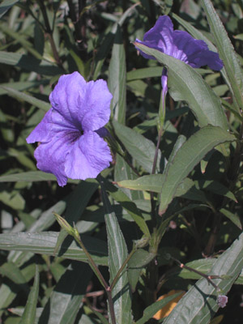

Previous || Next || Return to Mystery Plants || USC Herbarium
This Week's Mystery Plant | Dr. John B. Nelson Curator, USC Herbarium |
|
There is a plant family called the "Acanthaceae," which consists of about 2,500 species found in warm parts of the world, especially Central and South America, Africa, and tropical Asia. The flowers of these plants are generally large and showy, and many species are very popular as houseplants or in the garden. Their matured capsules, or seed-pods, will contain a number of seeds, and when ripe enough, will open explosively, flinging the seeds a long way from the parent plant. The family name "Acanthaceae" comes from the genus Acanthus, a group of large herbs with spiny leaves, and large attractive flowers. The ancient Greeks much admired their native species of Acanthus, and commonly used imagery of its leaves in art. In fact, Corinthian columns are topped off with a cluster of carved acanthus leaves. Different species of Acanthus, sometimes called "Bear's breeches", are also popular in gardens in Europe and America. Our attention turns, this week, to a plant which is a bona-fide member of the Acanthaceae, but is not Acanthus. It is a perennial herb, native to Mexico, and it is becoming very popular in the garden and landscaping trade here in the Southeast. Its flowers are large and flamboyant, with a bright blue-purple corolla, although some forms of it have pink or white corollas. Its handsome leaves are dark green and willowy, and the plants may get up to over 3 feet tall. There are patches of it in various places around town here in Columbia, such as along the median of Blossom Street (at Sumter Street), on our campus. It's said to be an easy plant to grow in open, sunny places with moist soil. In the Carolinas, it dies back in the winter, being sensitive to cold, but in Florida, this species is becoming something of a nuisance as a weed. If you decide you want to grow this, be aware that it may be invasive. |
 Photo by Linda Lee |